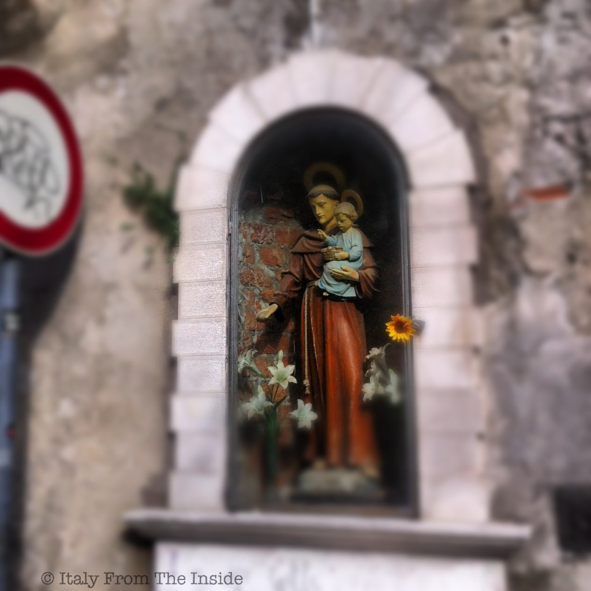

One day, while I was strolling the oldest neighborhood in Trieste, I stumbled upon this statue of San Francesco d'Assisi, one of the Saints Italians love the most. Even though there are more than 500 temples dedicated to him, he only comes in "third place". As a matter of fact, according to a survey, San Pio and Sant'Antonio have the biggest presence in the lives of Italians.